Recent Developments in High-Resolution Image Synthesis
tech talk @ ZHAW
Philipp Denzel 
Slides on my website
My previous work
- PhD in Physics from UZH @ ICS
- gravitational lens modelling
- "relativistic/astrophysical" raytracing
- Bayesian technique based on image synthesis & reconstruction (see Denzel et al. 2021a)
input data
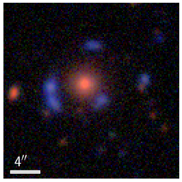
➝
latent representation
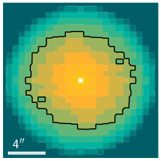
➝
reconstruction
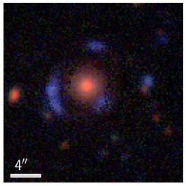
Generative deep learning
Motivation
- goal of AI: automate intelligent behaviour on silicon-based machines
- in contrast to discriminative deep learning:
- pattern recognition
- generative deep learning:
- approximate the true data density with parameters \(\theta\), optionally conditioned on some information \(c\): \[ P_\theta(x|c) \sim P_\text{data}(x|c) \]
- (inspired) creativity ➝ much more ambitious
Approaches and objectives
- VAEs: \(\quad \log{p(x)} \ge \mathbb{E}_{z\sim q_{\theta}(z\vert x)}[\log{p_\theta(x\vert z)}] - D_{KL}\left(q_\theta(z\vert x) \vert\vert p(z)\right)\)
- fast, regularized latent space, lower bound to LL, trade-offs: reconstruction ⇿ regularization
- GANs: \(\quad \mathbb{E}_{x\sim p_\text{data}}[\log{D_\theta(x)}] + \mathbb{E}_{z\sim q(z)}[1-\log{D_\theta(G_\theta(z))}]\)
- fast, high quality, implicit density, mode collapse
- Autoregressive models: \(\quad p(x) = \prod_i p_\theta(x_i\vert x_{\lt i})\)
- exact, good results, no latent representation, slow inference
- Diffusion Models: \(\quad -\log{p(x)} \le \mathbb{E}_{q}[\log{\frac{q(x_{1:T}\vert x_0)}{p_\theta(x_{0:T})}}]\)
- flexible, high fidelity, lower bound to LL
- etc.
Diffusion models
LDMs by Rombach & Blattmann et al. (2022), Google's Imagen or OpenAI's DALLE-2:
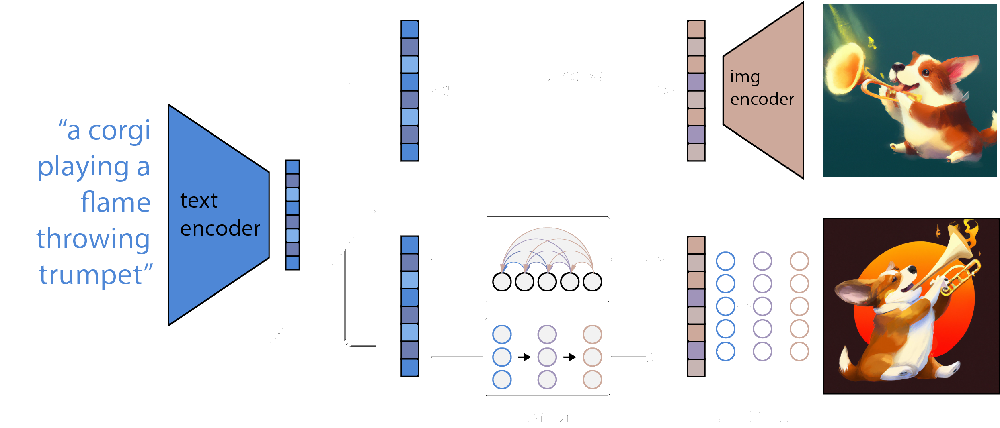
from Ramesh et al. (2022)
Text to image
- DALLE-2 - a new champion in semantic understanding
- generates images up to 1 Megapixel!
"A corgi's head depicted as
an explosion of a nebula"
from Ramesh et al. (2022)
"A dolphin in an astronaut suit
on saturn, artstation"
from Ramesh et al. (2022)
"Panda mad scientist mixing
sparkling chemicals, artstation"
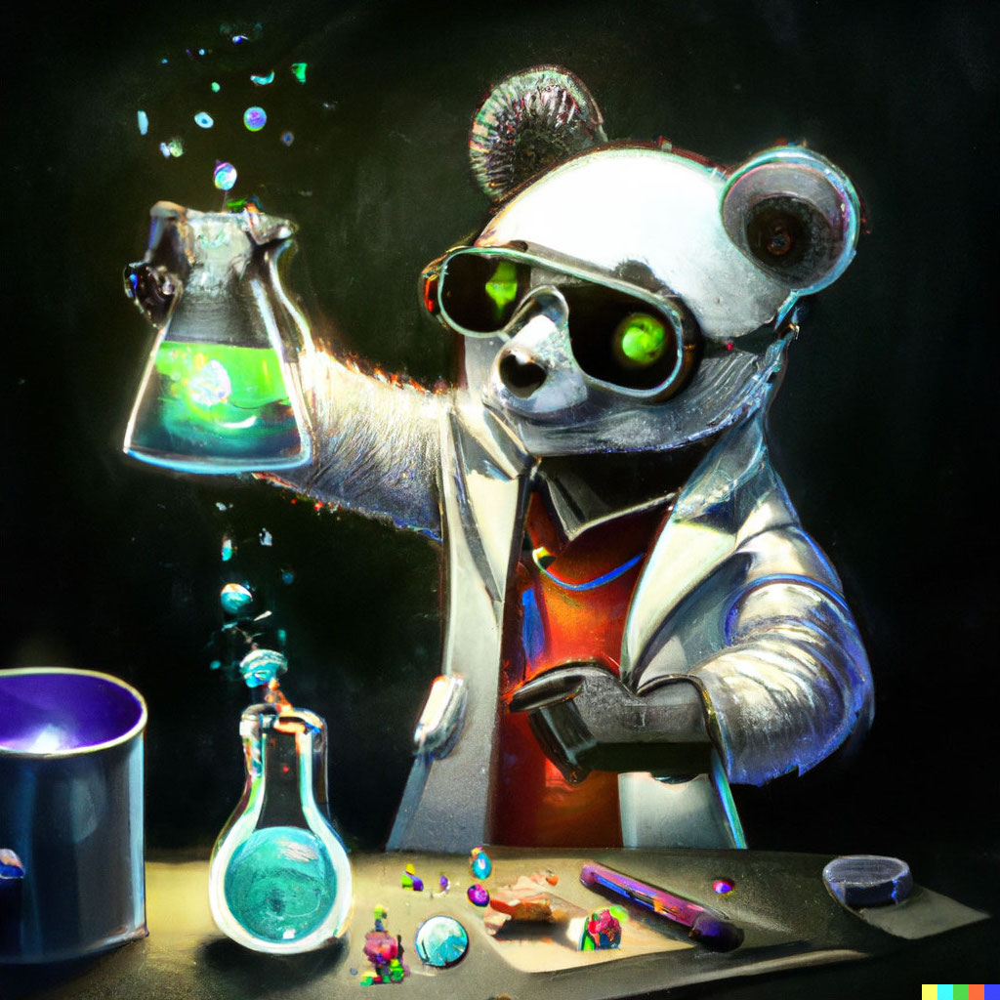
from Ramesh et al. (2022)
Taming Transformers
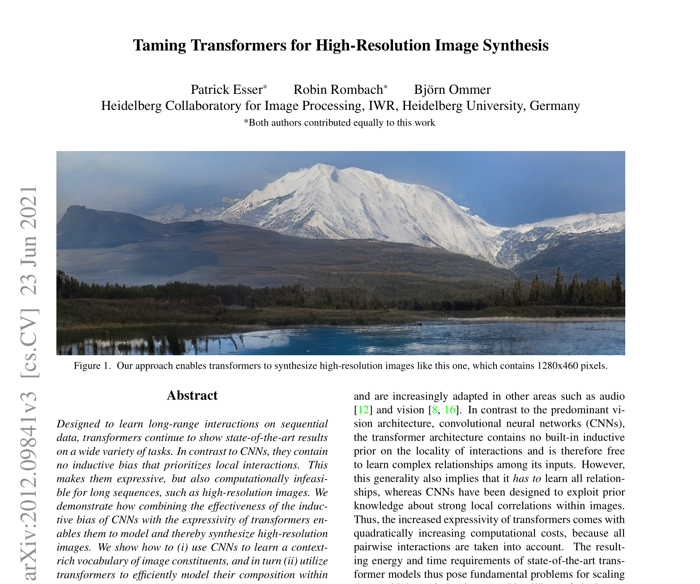
Transformers - Attention mechanism
\[ \text{Attention}(Q, K, V) = \text{softmax}\left(\frac{QK^{T}}{\sqrt{d_k}}\right) V \]
- where \(Q\) query, \(K\) key, and \(V\) value are matrixes
- (packed sets of vectors)
- • $\quad$dot-product: quadratic complexity!
- • $\quad$captures long-range interaction
Scaled Dot-Product Attention
(Vaswani et al. 2017)
Transformers - Architecture
Multi-headed attention (Vaswani et al. 2017)
Combine approaches
- VQVAEs + GANs + autoregressive model = VQGAN
- VQVAEs: latent variables
- CNNs: local interactions
- Transformers: global interactions
- adversarial idea: efficient learning
VQGAN
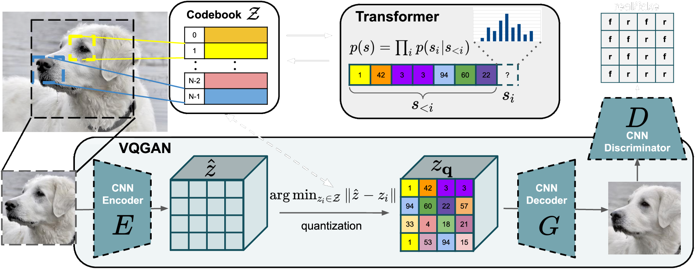
\(\quad \mathcal{Q}^{*}_{\text{VQGAN}} = \arg\min_{E, G, \mathcal{Z}} \max_{D} \mathbb{E}_{x\sim p(x)} \left[\mathcal{L}_{\text{VQ}}(E, G, \mathcal{Z}) + \lambda\mathcal{L}_{\text{GAN}}(\{E, G, \mathcal{Z}\}, D)\right]\)
First-stage reconstructions
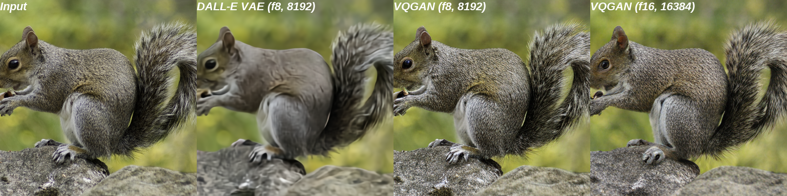
First-stage reconstructions
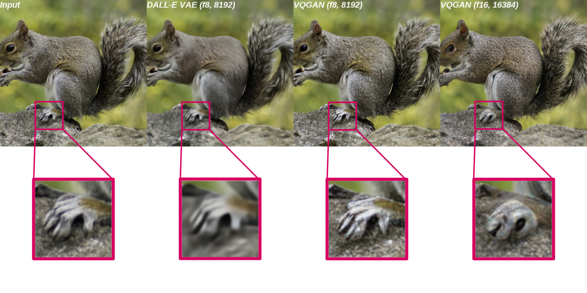
Semantic conditioning (\(f=16\))
semantic map
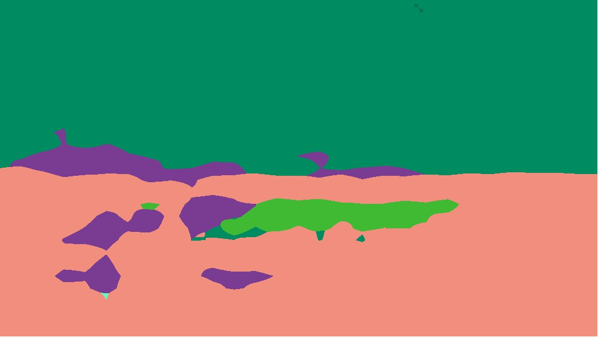
sample
another sample
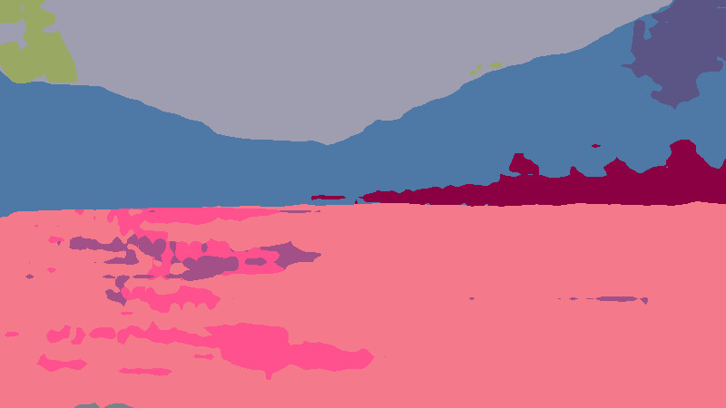
A variety of image synthesis tasks
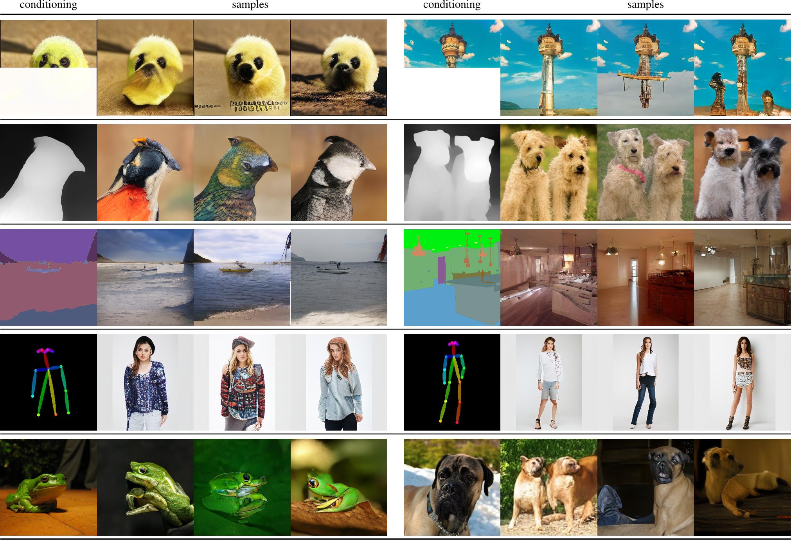
A variety of image synthesis tasks
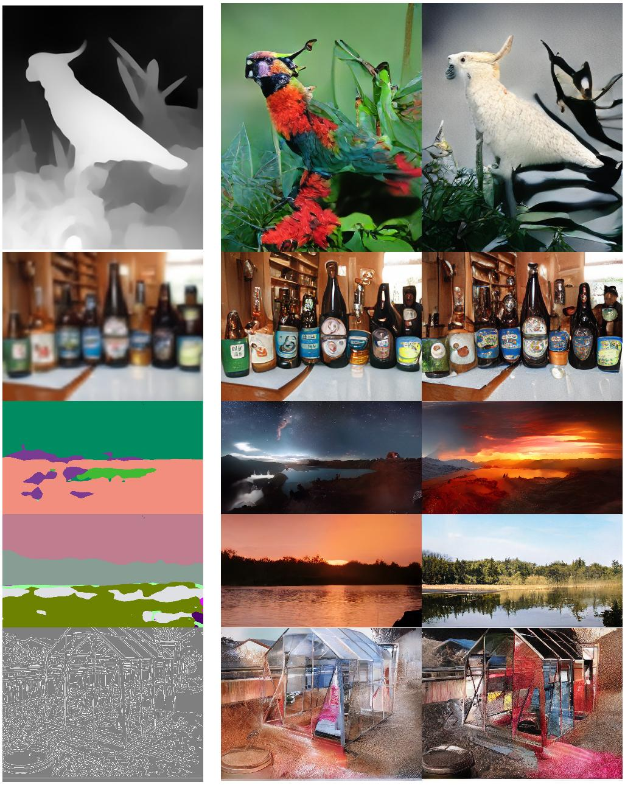
High-resolution?
- long sequences computationally expensive since \(\mathcal{O}(N^2)\)
- possible using attention sliding window
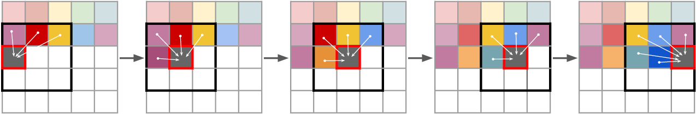
High-resolution
High-resolution
High-resolution
Summary: High-resolution image synthesis
- > 1 Megapixel images are possible w/ two-stage approaches
- diffusion models show excellent results in semantic understanding
- autoregressive models can be optimized for high-resolution image generation